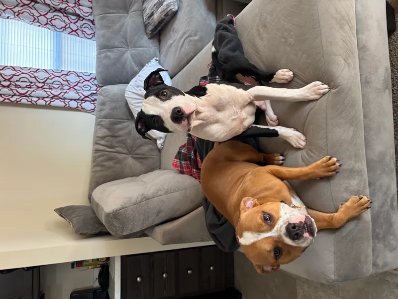

01
Computer & laptop repair
Diagnostics, slow computers, Windows resets, SSD/RAM upgrades, batteries, keyboards and screen replacement.
PC · MAC · SSD · RAM · DISPLAYRequest this serviceFrom a broken screen to the systems behind your business. Repair, IT, websites, networks and security — built with Ronald.
Fast repair jobs solve today's problem. Business systems, networks and software solve the larger problems behind them.
Diagnostics, slow computers, Windows resets, SSD/RAM upgrades, batteries, keyboards and screen replacement.
PC · MAC · SSD · RAM · DISPLAYRequest this serviceScreen and common hardware replacement, device setup, data transfer and troubleshooting.
IPHONE · IPAD · DEVICE SETUPRequest this serviceWi-Fi, workstations, printers, email, remote support, backups and practical technology management.
NETWORKS · DEVICES · SUPPORTRequest this serviceModern websites, booking flows, customer portals, payments, dashboards and business automations.
WEB · STRIPE · AUTOMATIONRequest this servicePurpose-built apps and internal tools that remove repetitive work and connect the parts of your operation.
REACT · NODE · AI · DATABASESRequest this serviceCameras, sensors, local servers, remote access and custom monitoring concepts for homes and businesses.
CAMERAS · IOT · SERVERSRequest this serviceRouter and access point setup, coverage planning, connection problems and getting your workstations, printers and devices talking to each other.
WI-FI · ROUTERS · ACCESS POINTSRequest this serviceExplore public websites and software projects, plus the connected-security ideas taking shape in the lab.

FAMILY-STYLE PET CAREBooking, pricing, customer flow and operations for a real pet-care company serving Chicagoland's south suburbs.
OPEN ↗Web application · sign-in requiredProperty-management OS for rent, tenants, maintenance and owner workflows.
OPEN ↗Client websiteReal-estate brand site designed around lead capture and client trust.
OPEN ↗Interactive experienceLocation-based PWA blending game design, WebXR concepts and a real park.
OPEN ↗Custom alarm and connected-security stack spanning sensors, cameras, microcontrollers and a Linux server.
Surveillance SaaS concept combining camera access, cloud storage and AI-generated event descriptions.
Whether you bring in a laptop or need a complete business system, the process stays simple.
Bring the device in or explain what your business needs. You do not need to know the technical diagnosis.
I isolate the issue, explain the options and confirm the scope before paid work moves forward.
The work gets completed with the smallest practical solution first — then expanded only where it creates value.
You get the result, the important details and a clear next step if the project needs ongoing support.
Start with the problem. Computer repair, phone or tablet work, networking, business IT, a website, automation or custom software can all begin here.
Choose a service and describe the problem. Ronald will review the details and discuss the next step, scope and price with you.
hampton.ronald1996@gmail.com ↗